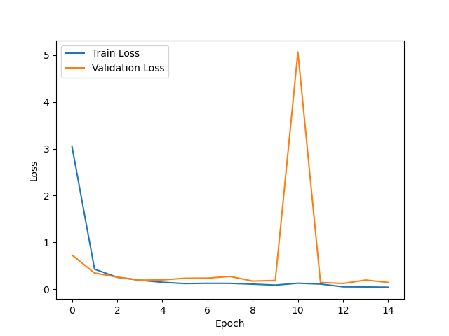
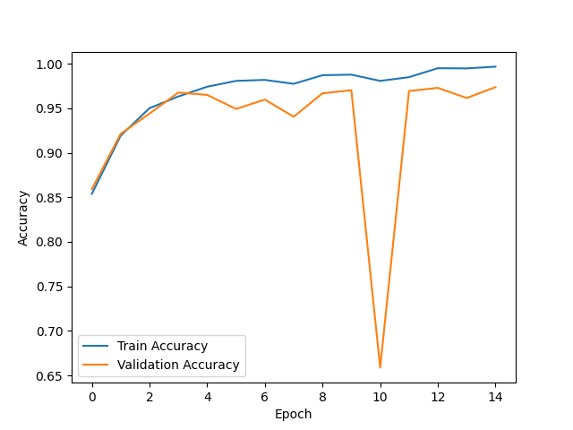
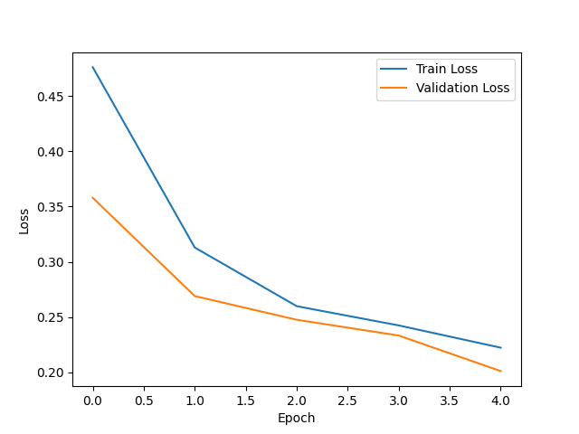
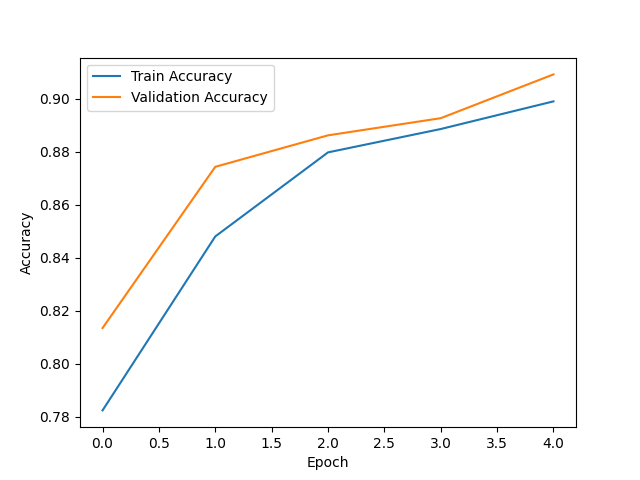
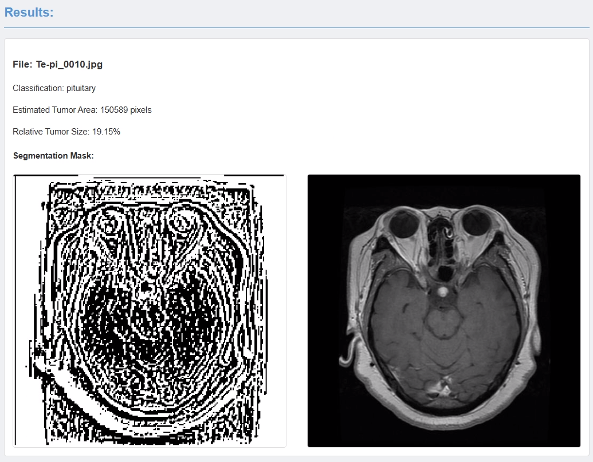

Results
What we ended up with.
Training Results
ResNet Results
Below represents the increase of accuracy and decrease of loss in the ResNet model. As we can see the loss in training starts off high above 3, which is to be expected in initial training. What is great to see is the loss decreasing below 1 after this first epoch and steadily decreasing closer to zero over the rest. The validation follows the same suit, where from epoch 4 and higher the loss seems to be only slightly higher than the training set.
Epoch vs. Loss for Training and Validation in ResNet.
We see the inverse happening with accuracy, where the training set of data approaches near perfect accuracy by the final epoch. The validation set follows the training accuracy initially, but we see a drop in validation accuracy after the 4th epoch. For the rest of the epochs the validation accuracy dances between 94% and 97%, an accuracy that can still be praised.
Epoch vs. Accuracy for Training and Validation in ResNet.
U-Net Results
U-Net has strong values for both training and validation loss and accuracy. Unlike ResNet, which had more than 10 epochs, U-Net was setup with 4. This, however, did not prove adverse to it's success as the training loss had decreased from ~0.48 to ~0.24. The validation set had an improvement over the training set where it's loss decreased from ~0.36 to ~0.21.
Epoch vs. Loss for Training and Validation in U-Net.
Accuracy saw the same great results. The training set had increased it's accuracy from ~78% to ~90% after the four epochs. The validation set again improved upon the training set and increased from ~81% to ~91%.
Epoch vs. Accuracy for Training and Validation in U-Net.
This then can be improved further on future iterations with changes to epoch amount, learning rate, batch size, and the size of training and validation sets. These models can already be seen to be powerfully accurate in determining the correct diagnosis. With increased use, the models will improve and accuracy will plateau closer to near perfection.
Prediction Results
It is then interesting to see, "What is the diagnosis of this image?" when we know the correct disease label. We found that the model can correctly distinguish the classification. If the classification is not non-tumorous, the program can accurately estimate the size of the tumor by pixels within the image and then use such information to estimate the relative size of the tumor compared to the size of the brain in percentage. Followed by the segmentation mask created by U-Net and the original image. Below is the example you may recognize from the Process page.
Example Prediction Result Output.